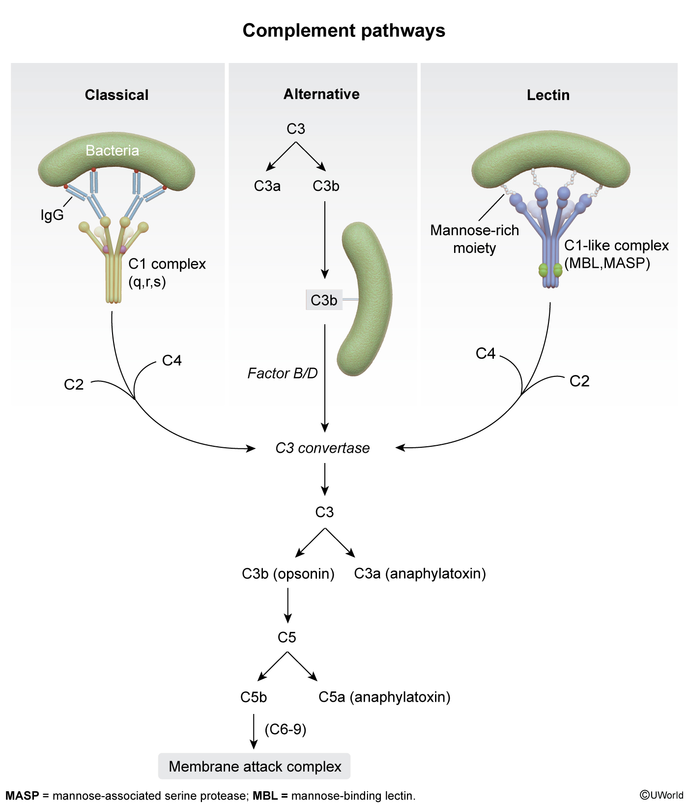

A 24-year-old, previously healthy woman is evaluated for skin rash, joint pains, and renal failure. She is found to have decreased C3 and C4 levels and a normal factor B level. Which of the following most likely triggered the complement system activation in this patient?
The patient's symptoms of skin rash, joint pains, and renal failure, along with decreased C3 and C4 levels and a normal factor B level, are indicative of systemic lupus erythematosus (SLE). SLE is an autoimmune disease characterized by the production of autoantibodies that bind to host antigens, triggering the classical complement pathway. This leads to low C4 and C3 levels due to their consumption in the complement cascade. Factor B levels remain normal because autoantibodies do not activate the alternative complement pathway.
In your selected answer (A), you suggested that antigens binding to IgA triggered the complement system activation. However, this is incorrect because the Fc portions of IgA, IgE, and IgD cannot activate the complement system. Therefore, IgA-antigen binding does not reduce C3 and C4 levels.
The correct answer is E, which corresponds to IgG-antigen complex formation. In SLE, autoantibodies (often IgG) bind to host antigens, activating the classical complement pathway and leading to the symptoms observed in this patient.
Understanding the mechanisms of immune response and complement activation is crucial for diagnosing and managing autoimmune diseases like SLE. Keep studying hard and continue to apply your knowledge to clinical scenarios like this one. You're doing great!
Explanation

The complement cascade is an ancient proteolytic defense mechanism that plays a major role in both the innate and adaptive immune responses. It is activated by 3 major inciting events, all of which terminate in the generation of C3 convertase as follows:
Antibody-antigen binding (classical pathway): The C1 complex (C1q/r/s) forms on the Fc portion of an IgM or IgG antibody that is bound to an antigen; the C1 complex then cleaves C4 and C2 into C3 convertase.
Lectin pattern recognition receptor binding (lectin pathway): Host pattern recognition receptors bind to carbohydrates that are produced only by foreign pathogens; binding generates proteases that cleave C4 and C2 into C3 convertase without requiring the C1 complex.
C3b binding (alternative pathway): A small amount of autoactivated C3b continually forms in the intravascular space and is rapidly inactivated by healthy cells. However, the presence of microbes or damaged cells amplifies the production of C3b, which then engages with factor B and factor D and generates C3 convertase.
C3 convertase catalyzes the formation of proteins that opsonize pathogens, promote inflammation, and lead to the generation of membrane attack complexes.
The most common cause of complement deficiency is autoantibodies, which activate the classical complement system after binding host antigens. Classical complement pathway activation is marked by low C4 and C3 levels and normal factor B levels; CH50, a measure of functional activity of the entire classical pathway (eg, sufficient C1-C9), will also be low. This pattern is common in systemic lupus erythematosus, particularly in the setting of active renal, skin, and joint disease.
(Choice A) The Fc portions of IgA, IgE, and IgD cannot activate the complement system. Therefore, IgA-antigen binding does not reduce C3 and C4 levels.
(Choice B) Autoactivation of C3b triggers the alternative complement pathway, which is marked by normal C4, low C3, and low factor B levels; AH50, a measure of functional activity of the alternative pathway, will also be low.
(Choice C) C1 inhibitors remove C1r/s from the Fc portion of immunoglobulin (classical pathway) and block the activation of C2/C4 by lectin pattern recognition receptors (lectin pathway). Therefore, C1 inhibitors prevent activation of the complement cascade and increase (not decrease) complement levels.
(Choice D) The complement cascade culminates with the generation of a membrane attack complex using C9 multimers in combination with C5-C8, leading to cell lysis.
Educational objective:
The binding of autoantibodies to host antigens can trigger the classical complement cascade, leading to low C4 and C3 levels. Because autoantibodies do not activate the alternative complement cascade, factor B levels remain normal. This pattern is frequently seen in rheumatologic diseases such as systemic lupus erythematosus.